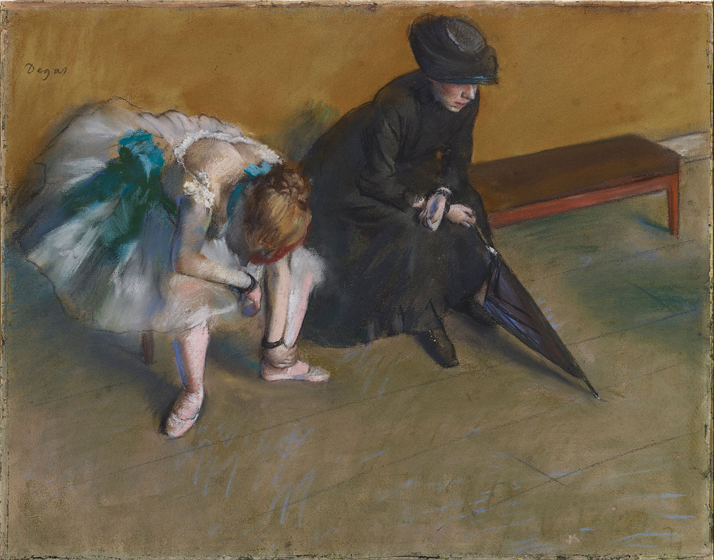

Degas "Waiting" Charcoals
The final for my freshman drawing class was an art history study in charcoal. I chose this because I liked contrast of the two forms, and I wanted to do a figure drawing since I could. Getting a good reference for this picture as I was making it was troublesome, not only because of printer issues, but the fact that though I tried getting a grayscale rendition to work more acurately, those versions always ended up dropping a lot of the subtlety, letting most of the tone fade to black. So I worked off of a color copy like this.
